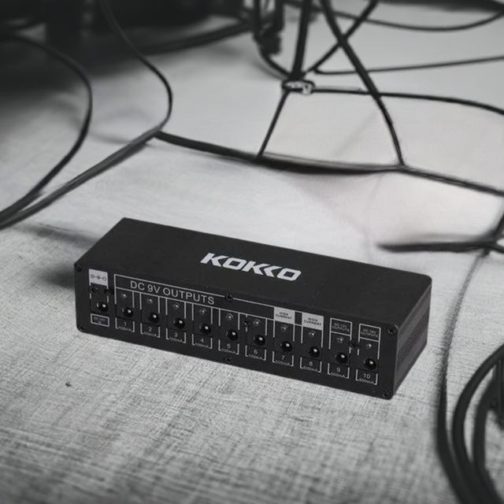

Algunas Opciones de Pedales
Nos encontramos con tres grandes categorías: los efectos que actúan sobre la ganancia (distorsiones, overdrives, compresores, EQs, limitadores, Wah-Wah, octavadores, filtros) los efectos de modulación (chorus, phasers, flangers, volumen) y los efectos de tiempo (delay, reverb). Los filtros y las EQ se sitúan generalmente delante, los overdrives y boosters en segunda posición, y los efectos de modulación y tiempo en última posición. De esta manera, la señal sucia de la guitarra se filtra y se corrige, se le da cuerpo y volumen antes de modular y finalmente se le añade el reverb/ repetición.
Fuentes para pedales
Siempre es recomendable una buena fuente para los pedales, tambien existen un abanicos de alternativas
